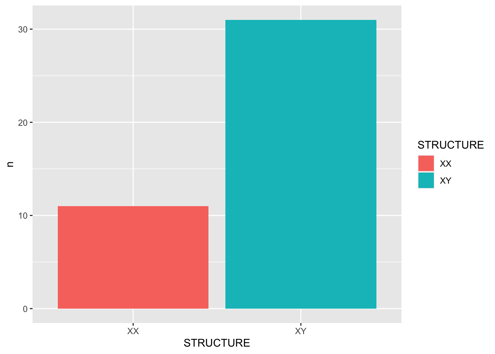

Chapter 12 Text Analytics: A Start
In this chapter, I will present a quick overview of computational text analytics with R. The most important package for exploratory text analysis is quanteda. As computational text analytics itself is an interesting topic, I would recommend other more advanced courses for those who are interested in this field.
This chapter is just to give you a taste of it.
12.1 Installing quanteda
There are many packages that are made for computational text analytics in R. You may consult the CRAN Task View: Natural Language Processing for a lot more alternatives.
To start with, this tutorial will use a powerful package, quanteda, for managing and analyzing textual data in R. You may refer to the official documentation of the package for more detail.
quanteda is not included in the default R installation. Please install the package if you haven’t done so.
install.packages("quanteda")
install.packages("readtext")Also, as noted on the quanteda documentation, because this library compiles some C++ and Fortran source code, you will need to have installed the appropriate compilers.
- If you are using a Windows platform, this means you will need also to install the Rtools software available from CRAN.
- If you are using macOS, you should install the macOS tools.
If you run into any installation errors, please go to the official documentation page for additional assistance.
library(quanteda)
library(readtext)
library(tidytext)
library(dplyr)
packageVersion("quanteda")## [1] '3.0.0'12.2 Building a corpus from character vector
To demonstrate a typical corpus analytic example with texts, I will be using a pre-loaded corpus that comes with the quanteda package, data_corpus_inaugural. This is a corpus of US presidential inaugural address texts, and metadata for the corpus from 1789 to present.
data_corpus_inaugural## Corpus consisting of 59 documents and 4 docvars.
## 1789-Washington :
## "Fellow-Citizens of the Senate and of the House of Representa..."
##
## 1793-Washington :
## "Fellow citizens, I am again called upon by the voice of my c..."
##
## 1797-Adams :
## "When it was first perceived, in early times, that no middle ..."
##
## 1801-Jefferson :
## "Friends and Fellow Citizens: Called upon to undertake the du..."
##
## 1805-Jefferson :
## "Proceeding, fellow citizens, to that qualification which the..."
##
## 1809-Madison :
## "Unwilling to depart from examples of the most revered author..."
##
## [ reached max_ndoc ... 53 more documents ]class(data_corpus_inaugural)## [1] "corpus" "character"We create a corpus() object with the pre-loaded corpus in quanteda– data_corpus_inaugural:
corp_us <- corpus(data_corpus_inaugural) # save the `corpus` to a short obj name
summary(corp_us)After the corpus is loaded, we can use summary() to get the metadata of each text in the corpus, including word types and tokens as well. This allows us to have a quick look at the size of the addressess made by all presidents.
require(ggplot2)
corp_us %>%
summary %>%
ggplot(aes(x = Year, y = Tokens, group = 1)) +
geom_line() +
geom_point() +
theme_bw()
Exercise 12.1 Could you reproduce the above line plot and add information of President to the plot as labels of the dots?
ggplot2::geom_text() or more advanced one, ggrepel::geom_text_repel()

12.3 Keyword-in-Context (KWIC)
Keyword-in-Context (KWIC), or concordances, are the most frequently used method in corpus linguistics. The idea is very intuitive: we get to know more about the semantics of a word by examining how it is being used in a wider context.
We can use kwic() to perform a search for a word and retrieve its concordances from the corpus:
kwic(corp_us, "terror")kwic() returns a data frame, which can be easily output to a CSV file for later use.
Please note that kwic(), when taking a corpus object as the argument, will automatically tokenize the corpus data and do the keyword-in-context search on a word basis. In other words, the pattern you look for cannot be a linguistic pattern across several words. quanteda can take care of Chinese word segmentation but with a limited capacity.
12.4 KWIC with Regular Expressions
For more complex searches, we can use regular expressions as well in kwic(). For example, if you want to include terror and all its other related word forms, such as terrorist, terrorism, terrors, you can do a regular expression search.
corp_us_tokens <- tokens(corp_us)
kwic(corp_us_tokens, "terror.*", valuetype = "regex")By default, the kwic() is word-based. If you like to look up a multiword combination, use phrase():
kwic(corp_us_tokens, phrase("our country"))It should be noted that the output of kwic includes not only the concordances (i.e., preceding/subsequent co-texts + the keyword), but also the sources of the texts for each concordance line. This would be extremely convenient if you need to refer back to the original discourse context of the concordance line.
kwic() search.

12.5 Lexical Density Plot
Plotting a kwic object produces a lexical dispersion plot. which allows us to visualize the occurrences of particular terms throughout the text.
require(quanteda.textplots)
corp_us_tokens %>%
tokens_subset(Year > 1949) %>%
kwic(pattern= "american") %>%
textplot_xray()
corp_us_subset <- corp_us_tokens %>%
tokens_subset(Year > 1949)
textplot_xray(
kwic(corp_us_subset, pattern = "american"),
kwic(corp_us_subset, pattern = "people")
)
12.6 Document-Feature Matrix
Another important object class is defined in quanteda: the dfm. It stands for Document-Feature-Matrix. It’s a two-dimensional co-occurrence table, with the rows being the documents in the corpus, and columns being the features used to characterizing the documents. The cells in the matrix often refer to the co-occurrence statistics between each document and the feature. We can use dfm() to create the dfm of a corpus.
corp_us_dfm <- corp_us %>% tokens %>% dfm
corp_us_dfm[1:10, 1:10]## Document-feature matrix of: 10 documents, 10 features (43.00% sparse) and 4 docvars.
## features
## docs fellow-citizens of the senate and house representatives :
## 1789-Washington 1 71 116 1 48 2 2 1
## 1793-Washington 0 11 13 0 2 0 0 1
## 1797-Adams 3 140 163 1 130 0 2 0
## 1801-Jefferson 2 104 130 0 81 0 0 1
## 1805-Jefferson 0 101 143 0 93 0 0 0
## 1809-Madison 1 69 104 0 43 0 0 0
## features
## docs among vicissitudes
## 1789-Washington 1 1
## 1793-Washington 0 0
## 1797-Adams 4 0
## 1801-Jefferson 1 0
## 1805-Jefferson 7 0
## 1809-Madison 0 0
## [ reached max_ndoc ... 4 more documents ]We can see that in the first document, i.e., 1789-Washington, there are 2 occurrences of representatives, 48 occurrences of and
12.7 Feature Selection
A dfm may not be as informative as we have expected. To better capture the documental semantic similarity, there are several important factors that need to be more carefully considered with respect to the features of the dfm:
- The granularity of the features
- The informativeness of the features
- The distributional properties of the features
Not only does dfm() provide many arguments for users to specify conditions for features selection; in quanteda, we can also apply dfm_trim() to select important features for later analysis.
corp_dfm_trimmed <- corp_us %>%
tokens( remove_punct = T,
remove_numbers= T,
remove_symbols = T) %>%
dfm %>%
dfm_remove(stopwords("en")) %>%
dfm_trim(min_termfreq = 10, termfreq_type = "count",
min_docfreq = 3, max_docfreq = ndoc(corp_us)-1,
docfreq_type = "count") 12.8 Top Features
With a dfm, we can check important features from the corpus.
topfeatures(corp_dfm_trimmed,10)## people government us can must upon great
## 584 564 505 487 376 371 344
## may states world
## 343 334 31912.9 Wordclouds
With a dfm, we can visualize important words in the corpus with a Word Cloud. It is a novel but intuitive visual representation of text data. It allows us to quickly perceive the most prominent words from a large collection of texts.
corp_dfm_trimmed %>%
textplot_wordcloud(min_count = 50, random_order = FALSE,
rotation = .25,
color = RColorBrewer::brewer.pal(8, "Dark2"))
We can also compare word clouds for different subsets of the corpus:
corpus_subset(corp_us,
President %in% c("Obama", "Trump", "Clinton")) %>%
tokens(remove_punct = T,
remove_numbers= T,
remove_symbols = T) %>%
tokens_group(groups = President) %>%
dfm() %>%
dfm_remove(stopwords("en")) %>%
dfm_trim(min_termfreq = 5,
termfreq_type = "count") %>%
textplot_wordcloud(comparison = TRUE)
12.10 Keyness Analysis

12.11 Flowchart
Finally, Figure 12.1 below provides a summary flowchart for computatutional text analytics in R.
Figure 12.1: Computational Text Processing Flowchart in R
12.12 Exercises
In the following exercise, please use the dataset demo_data/TW_President.tar.gz, which is a text collection of the inaugural speeches of Taiwan Presidents (till 2016).
You may load the entire text collection as a corpus object using the following code:
require(readtext)
require(quanteda)
corp_tw <- readtext("demo_data/TW_President.tar.gz") %>%
corpusExercise 12.3 Please create a data frame, which includes the metadata information for each text. You may start with a data frame you get from summary(corp_tw) and then create two additional columns—President and Year, which can be extracted from the text filenames in the Text column.
tidyr::extract()
summary(corp_tw) %>% as_tibbleAfter you create the metadata DF, please assign it to the docvars(corp_tw) for later analysis.

corp_tw. In the word cloud, please remove punctuations, numbers, and symbols. The word cloud has to only include words whose frequency >= 20.

CAYANGWEN), Ma (MAYANGJIU), and Shuibian Chen (CHENSHUIBIAN).

CAYANGWEN) vs. President Ma (MAYANGJIU).